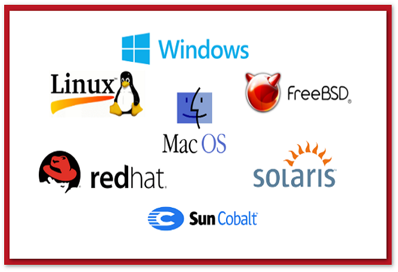
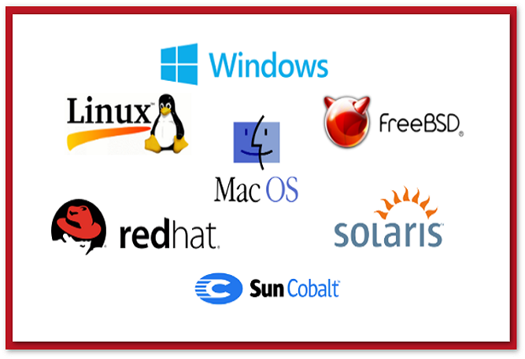

SISTEMAS OPERACIONAIS
 

OS SISTEMAS OPERACIONAIS (SO) SÃO SOFTWARES COMPLEXOS QUE POSSIBILITAM A INTERATIVIDADE DO USUÁRIO FINAL COM O CONJUNTO DE DISPOSITIVOS ELETRÔNICOS QUE FORMAM UM COMPUTADOR. NA PRÁTICA, ISSO SIGNIFICA QUE É O SISTEMA OPERACIONAL QUE CONTROLA, ORGANIZA E COORDENA AS AÇÕES EXECUTADAS EM DISPOSITIVOS COMPUTACIONAIS.
NESTE CURSO, VOLTADO PARA USUÁRIOS INICIANTES, O ESTUDANTE CONHECERÁ DESDE O CONTEXTO DO SURGIMENTO E EVOLUÇÃO DOS SISTEMAS OPERACIONAIS ATÉ COMO FAZER O GERENCIAMENTO DE ARQUIVOS E O CONTROLE DE ACESSO A GRUPOS DE USUÁRIOS.